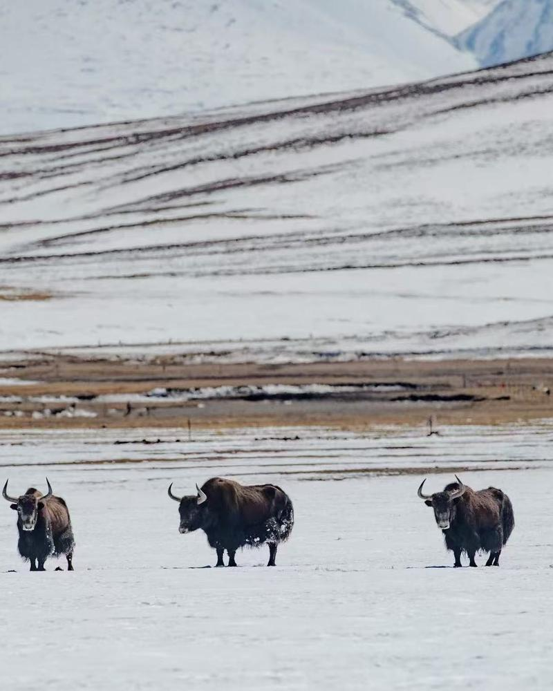
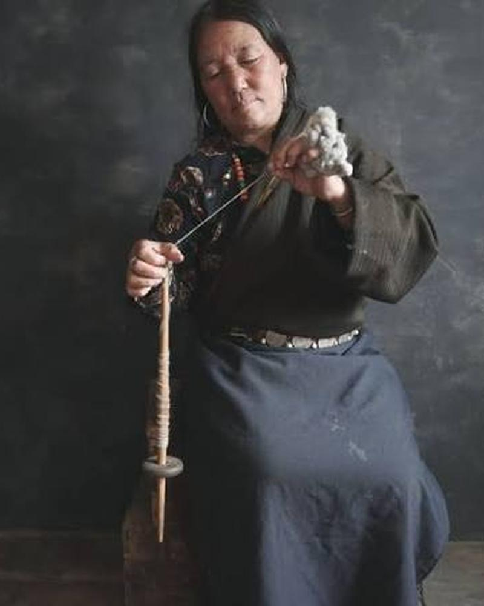
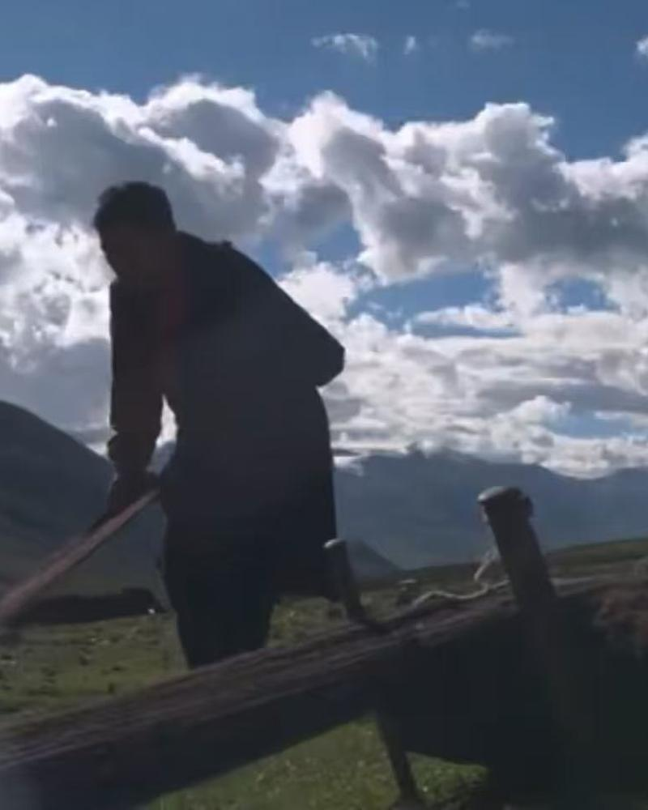
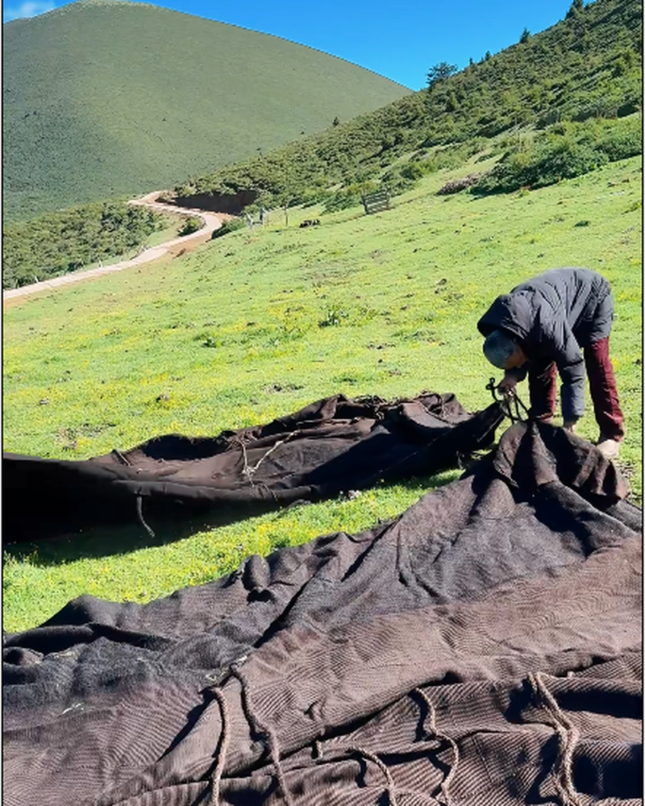
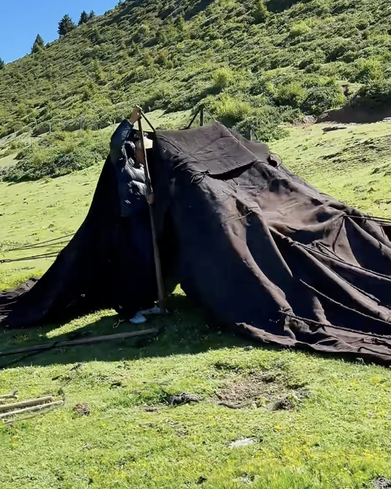
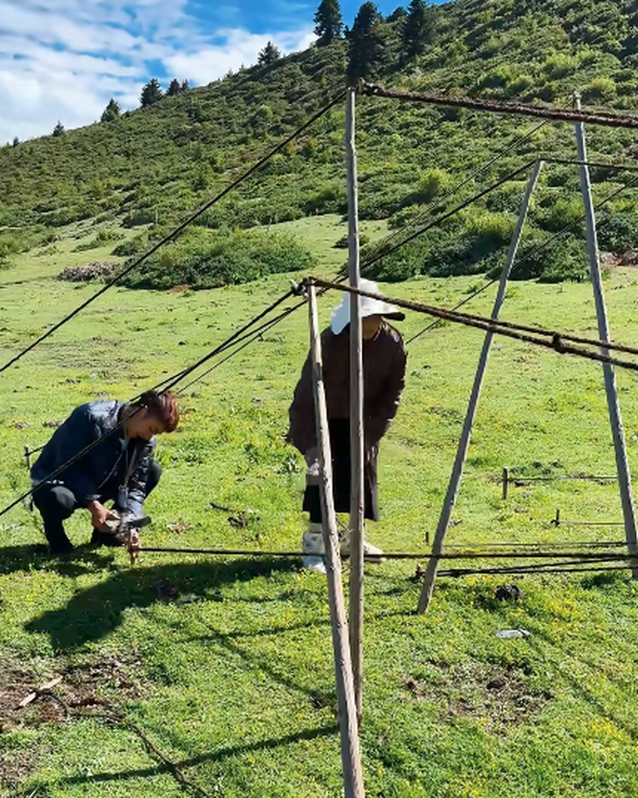

筑见 ZHUJIAN
用双手，
重新遇见一座非遗建筑。
将建筑非遗的营造过程，
转化为可体验、可生成、可分享的数字互动。
从巴青牦牛毛帐篷开始，用手势编织布面、牵引成形，
生成并分享属于你的营造作品。
选择一项营造技艺
-
01巴青牛毛帐篷开始体验
-
02侗族木构营造技艺即将开放
-
03香山帮传统建筑营造即将开放
-
04徽派民居营造技艺即将开放
-
05藏式碉楼营造技艺即将开放
点击项目进入体验
THREAD · TENSION · SHELTER
用双手，
撑起一座会呼吸的家
一根牦牛毛线如何成为一座空间？
让双手沿着编织、张拉与平衡的路径找到答案。
手势识别仅在当前设备中运行，不会上传摄像头画面。
等待开始
01 / 05
编织
双手拉开，横向划过，再向下压紧。
YOUR TENSION RESULT
你撑起了「逆风而立的帐篷」
灵感来自藏族牛毛帐篷营造技艺
巴青牛毛帐篷编制技艺流传于藏北牧区，2021 年列入第五批国家级非物质文化遗产代表性项目名录。传统帐篷通常由多幅“日雅”粗氆氇缝合而成，制作需经过剪毛、梳毛、捻线、卷线、铺线、编织等工序，再通过拉绳、撑杆和木橛调整张力。它不是固定在地上的房子，而是牧民随草场迁徙时，一次次被重新撑起的家。
MY TENSION SPACE · 01
你撑起了「逆风而立的帐篷」
用户营造过程
灵感来自藏族牛毛帐篷营造技艺
巴青牛毛帐篷编制技艺流传于藏北牧区，2021 年列入第五批国家级非物质文化遗产代表性项目名录。传统帐篷通常由多幅“日雅”粗氆氇缝合而成，制作需经过剪毛、梳毛、捻线、卷线、铺线、编织等工序，再通过拉绳、撑杆和木橛调整张力。它不是固定在地上的房子，而是牧民随草场迁徙时，一次次被重新撑起的家。
一根牦牛毛线如何成为一座空间？
让双手沿着编织、张拉与平衡的路径找到答案。
project10minimax.aoe-designstudio.art
FROM THREAD TO HOME
它如何成为一座家
非遗营造技艺
巴青牛毛帐篷编制技艺是流传于西藏那曲市巴青县的传统营造技艺，也是藏北游牧文化的重要象征。帐篷以牛毛织成的粗氆氇“日雅”为主要材料，经剪毛、梳毛、捻线、卷线、铺线和编织等工序制作，具有冬暖夏凉、防雨耐腐、便于驮运等特点，被誉为藏北牧民“流动的家”。这项技艺已有300余年历史，凝聚了藏族人民适应高寒环境的生活智慧，对传承传统文化、增强文化认同具有重要意义。

01 · 剪取毛料牧民从牦牛身上剪下毛，拣出适合织作的长纤维，再整理成一簇簇毛料。

02 · 捻合成线纤维沿同一方向缠绕、拉长，成为带着毛羽与粗细变化的牛毛线。

03 · 编织成幅经线被拉直，纬线反复穿过并逐行压紧，织成狭长的“日雅”牛毛织片。

04 · 拼接成面多幅窄织片沿边缘相接，缝合痕迹将它们连成一整块柔韧篷布。

05 · 张拉成形拉索向外延伸，松弛的篷布被缓缓绷紧，由平面隆起为可容纳人的空间。

06 · 锚固落地篷布向下展开，拉索连接地桩，柔性的结构被固定在此刻的土地上。